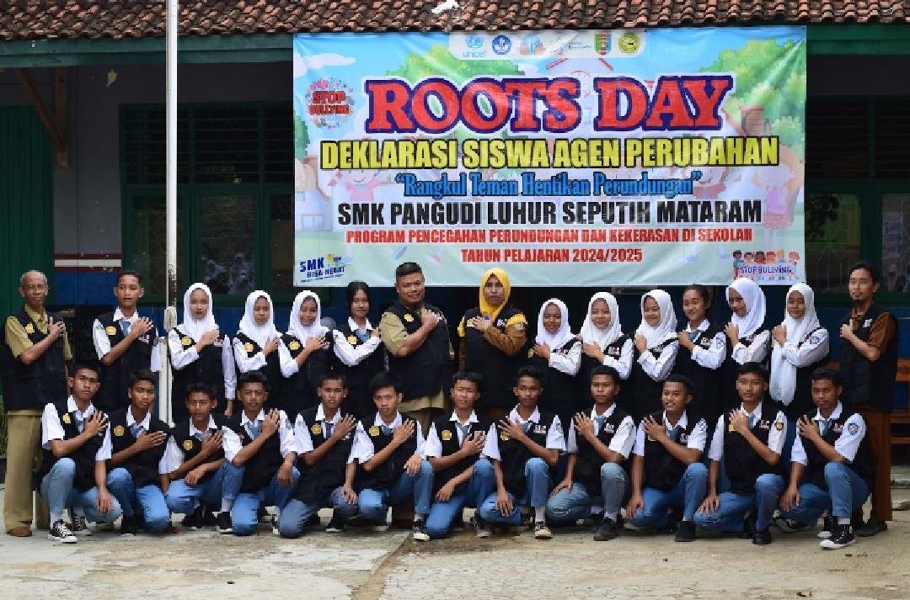

Berita Terbaru

Hari Guru Nasional
Merayakan dedikasi guru yang telah memberikan ilmu dan semangat kepada siswa.
Baca Selengkapnya
Pemilihan Ketua OSIS
Proses demokrasi di sekolah untuk memilih pemimpin OSIS yang baru.
Baca Selengkapnya

Pelantikan Agen Anti Perundungan
Langkah baru menjaga lingkungan sekolah yang aman dan nyaman.
Baca Selengkapnya